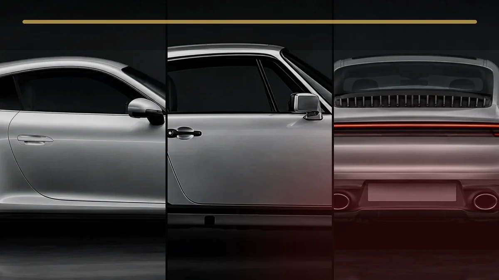
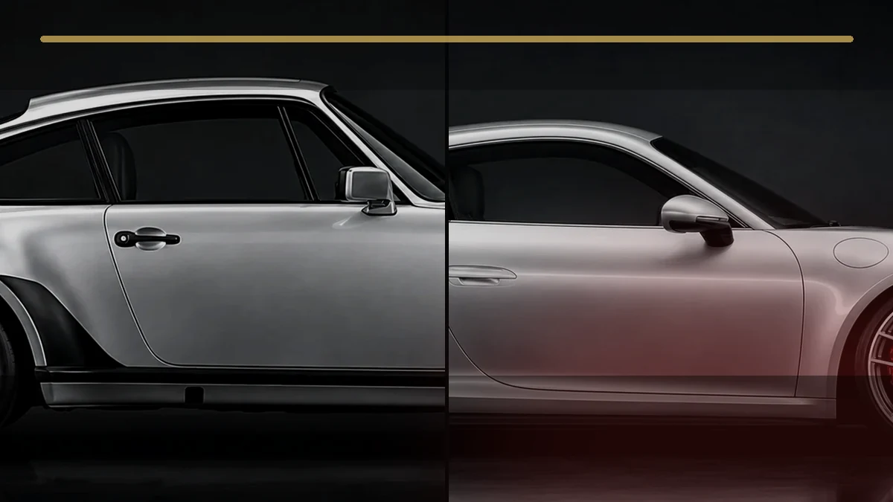
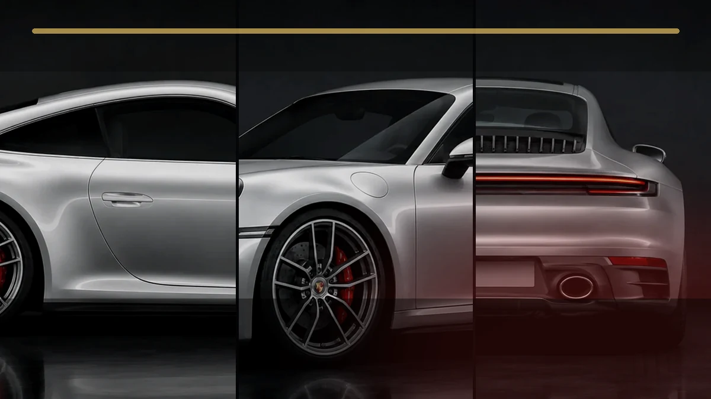
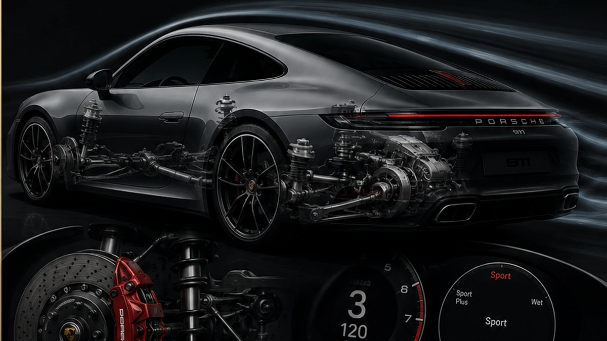

Porsche Experience

Diese Website präsentiert den Porsche 911 nicht nur mit Bildern und Videos, sondern erklärt auch seine Entwicklung, seine Modellgenerationen und die wichtigsten technischen Ideen dahinter. Ziel ist eine Seite, die optisch hochwertig wirkt und gleichzeitig inhaltlich verständlich bleibt.
Kernbereiche der Webseite
Geschichte verstehen
Die Geschichte-Seite ordnet den 911 historisch ein: vom klassischen Turbo-Auftritt über die letzte luftgekühlte Ära bis zur modernen 992-Generation.
Modelle vergleichen
Die Modellseite zeigt, wie sich Form, Technik und Charakter des 911 verändert haben, ohne dass die typische Silhouette verloren gegangen ist.
Technik erklären
Die Technik-Seite beschreibt Boxermotor, Getriebe, Fahrwerk, Aerodynamik und digitale Systeme so, dass sie auch ohne Vorwissen verständlich sind.
Eine interaktive Hommage an Technik, Geschichte und Design.
Das Projekt verbindet die Entwicklung des Porsche 911 mit einer klaren Nutzerführung, verständlichen Technik-Erklärungen und sichtbar funktionierenden Web-Komponenten. Gestaltung und Bedienung sollen dabei wie ein zusammenhängendes System wirken.

Einordnung
Warum der 911 im Mittelpunkt steht
Der Porsche 911 ist seit 1963 eine der bekanntesten Sportwagen-Baureihen. Besonders spannend ist, dass viele Grundideen erhalten blieben: flache Front, markante Kotflügel, fließende Dachlinie, Heckmotor-Konzept und eine Form, die über Generationen wiedererkennbar bleibt.
Design mit Wiedererkennungswert
Ein gutes Fahrzeugdesign erkennt man daran, dass es sich weiterentwickelt, ohne seine Identität zu verlieren. Genau das macht den 911 für ein Webseitenprojekt interessant.
Gute Struktur für Besucher
Die Website ist bewusst mehrseitig aufgebaut. Besucher sollen schnell entscheiden können, ob sie Geschichte, Modelle, Technik, Newsletter, Projektinformationen oder den Demo-Shop ansehen möchten.
Drei Einstiege
Wähle deinen Blick auf den 911
Die Website ist nicht als lange Werbeseite aufgebaut. Jeder Bereich beantwortet eine andere Frage und führt gezielt weiter.

Wie blieb die Form erkennbar?
Entdecke Generationen, technische Wendepunkte und die Designmerkmale, die den 911 über Jahrzehnte zusammenhalten.
Zur Geschichte →
Welcher 911 passt zu welchem Zweck?
Vergleiche Carrera, Targa, Turbo und GT-Modelle nach Charakter, Alltag, Emotion und Rennstreckenfokus.
Zum Modellvergleich →
Wie entsteht das Fahrerlebnis?
Motor, Getriebe, Fahrwerk, Bremsen und Aerodynamik werden als zusammenhängendes System erklärt.
Zur Technik →Ein glaubwürdiges Premium-Projekt erklärt nicht nur, was schön aussieht, sondern warum Gestaltung, Technik und Bedienung zusammenpassen.
Nutzerführung
Eine Website, drei klare Ebenen
Die Inhalte sind so aufgebaut, dass Besucher zuerst entdecken, anschließend verstehen und danach selbst ausprobieren können. Dadurch wirkt das Projekt nicht wie eine Sammlung einzelner Seiten, sondern wie eine zusammenhängende Experience.
Entdecken
Geschichte, Modelle und starke Medien geben einen schnellen Einstieg in die Welt des 911. Jede Seite beantwortet dabei eine eigene Leitfrage.
Historie öffnenVerstehen
Vergleichsmodule, Technik-Erklärungen und Q&A zerlegen komplexe Themen in nachvollziehbare Zusammenhänge statt nur Daten aufzulisten.
Engineering Lab startenAusprobieren
Newsletter, Demo-Shop und Projektbereich zeigen, wie eine echte Website Besucher führt, Eingaben verarbeitet und Ergebnisse transparent zurückmeldet.
Projektlogik ansehen